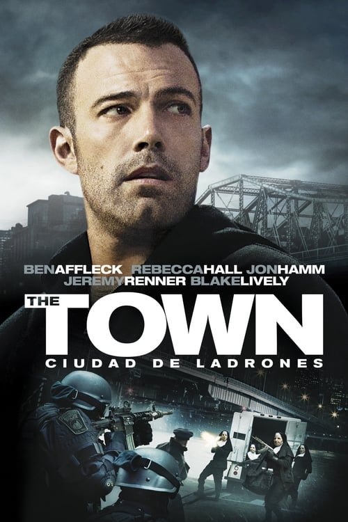

The Town: Ciudad de ladrones (2010)

Plataforma: Star+
Puntuación IMDb: 7.5/10
Duración: 1h 45m
Género: Thriller de Crimen
Sinopsis Rápida
Un atracador de bancos de Boston, experto en su trabajo, se enamora de una rehén, lo que complica sus planes y lo obliga a elegir entre el amor y la vida criminal.
Sinopsis Detallada
Doug MacRay y su banda de ladrones asaltan un banco en Charlestown, tomando rehenes, incluida Claire Keesey. Doug se obsesiona con Claire, llevando a un dilema moral y a una trama de tensión constante. La película explora la lealtad, el amor, la redención y la fuga en el submundo criminal de Boston. La tensión entre el romance y el thriller de crimen está magistralmente manejado. La cinta es un meticuloso estudio de personajes con un fuerte ritmo narrativo.
¿Por qué tenés que verla?
- Una emocionante historia de atracos y dilemas morales, con giros inesperados que te mantendrán al borde del asiento.
- La dirección de Ben Affleck, junto a su actuación, brinda una profundidad emocional excepcional a los personajes y un realismo fascinante.
- Su representación realista del inframundo de Boston y sus consecuencias, ha influenciado a otras películas del género.
- Una trama compleja e inteligente, con personajes bien desarrollados que hacen que la historia resulte creíble y atractiva.
Idea Extra
Comparación entre la representación de Charlestown en 'The Town' y la realidad del barrio: mitos y realidades.
{{CONTENIDO_RELACIONADO}}